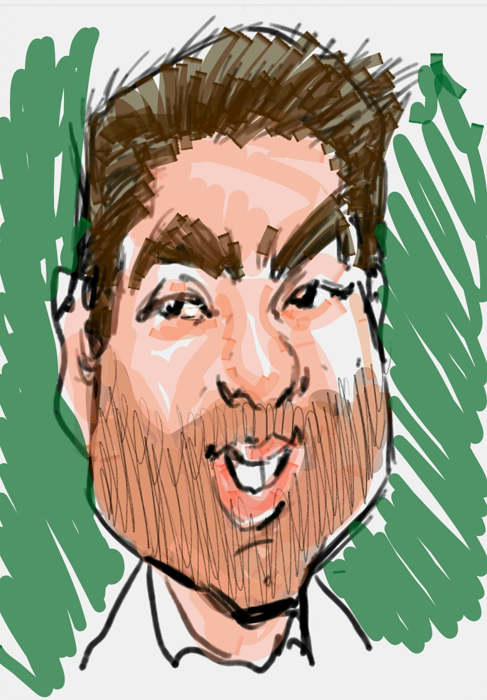

Sou Tech Lead, arquiteto de software hands-on e engenheiro full stack sênior, com mais de 20 anos de experiência em tecnologia. Iniciei minha trajetória em 2002, trabalhando com ASP, PHP 3 e SQL Server. Desde então, participei da criação, modernização e evolução de aplicações web, plataformas corporativas, e-commerces, sistemas distribuídos e produtos SaaS.
Minha atuação combina visão de negócio e execução técnica. Participo desde o discovery, levantamento de requisitos e definição de arquitetura até o desenvolvimento, implantação, observabilidade e evolução contínua dos produtos.
Tenho experiência com PHP, Laravel, Lumen, Node.js, Java, Spring Boot, JavaScript, TypeScript, Angular, Vue.js, AWS, Azure, GCP, Kubernetes, Docker, APIs REST, integrações e bancos relacionais e NoSQL. Como fundador e CTO da Devinhas, liderei projetos para turismo, logística, segurança, criogenia, mobilidade, varejo, telecomunicações, mídia, fintechs e iniciativas de impacto social.
Canal digital de relacionamento e atendimento ao cliente em tempo real.
Plataforma de mentoria e desenvolvimento de mulheres na área de tecnologia.
Diário gamificado voltado ao apoio no combate a abusos e à exploração infantil, em desafio com participação da Polícia Federal.
Ursinho conectado a recursos de inteligência artificial do IBM Watson para apoiar crianças em situações de ansiedade.
Experiência de realidade virtual integrada à API da Travelport para exploração imersiva de destinos turísticos.
Inglês intermediário para leitura de documentação técnica, comunicação profissional e participação em reuniões.